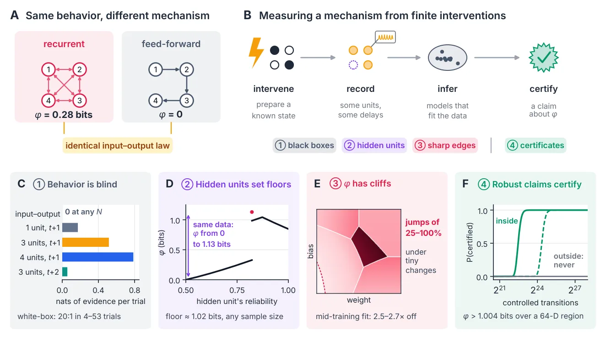
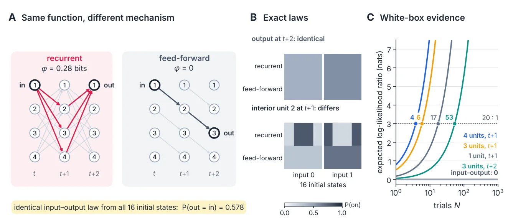
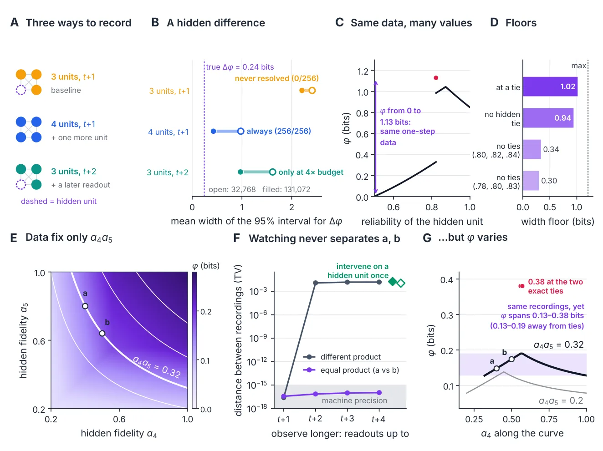
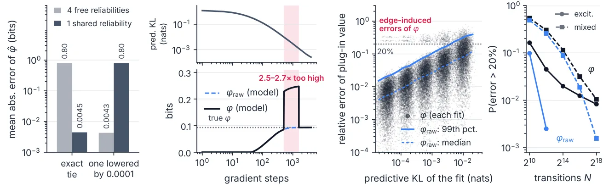

O Problema da Medição de Mecanismos
A avaliação de sistemas de IA, auditoria de modelos e até discussões sobre consciência artificial estão migrando do nível comportamental para o nível mecânico. Perguntas como 'qual algoritmo esta rede implementa?' ou 'há um mecanismo causal subjacente que justifique consideração moral?' exigem analisar como o sistema computa, não apenas o que ele produz. A Integrated Information Theory (IIT) é um exemplo extremo dessa abordagem: ela identifica a consciência com o poder causal intrínseco de um sistema, quantificado por uma única métrica escalar, phi (φ).
O problema central é que, na prática, não temos acesso direto à lei de transição causal completa de um sistema. Experimentos só podem observar o sistema através de intervenções finitas, parciais e ruidosas. Quando podemos certificar algo sobre φ a partir desses dados limitados? Os autores deste paper, Linqian Wu, Diaoxuan He e colaboradores, abordam essa questão com rigor matemático, focando em redes estocásticas pequenas (4 e 5 unidades) onde o valor verdadeiro de φ é conhecido.
O estudo revela que a mensurabilidade de φ não é apenas um desafio estatístico, mas uma questão de design experimental. Existem barreiras fundamentais que limitam o que qualquer experimento pode estabelecer, independentemente do número de amostras coletadas. Compreender essas barreiras é crucial para quem deseja fazer afirmações robustas sobre a arquitetura causal de sistemas complexos, sejam eles biológicos ou artificiais.

Comportamento Silencioso: Mesma Função, Mecanismo Diferente
A primeira descoberta desafia a intuição de que observar a entrada e a saída é suficiente para entender o sistema. Os autores construíram dois exemplos onde redes diferentes implementam exatamente a mesma lei de entrada-saída em um determinado atraso de resposta, mas possuem valores de φ drasticamente distintos.
No primeiro exemplo, uma rede recorrente e uma rede feed-forward (encadeada) são projetadas para ter a mesma função de paridade. A rede recorrente possui uma informação integrada de φ = 0,28 bits, indicando uma estrutura causal interconectada. Já a rede feed-forward, que processa informações de forma linear sem retroalimentação, tem φ = 0 bits. Ambas produzem o mesmo resultado para a mesma entrada no tempo de resposta declarado.
Se você observar apenas as entradas e saídas (comportamento), não há nenhuma diferença estatística possível entre os dois sistemas, não importa quantas amostras você colete. O comportamento é 'cego' para a diferença mecânica. No entanto, se o experimentador tiver acesso a registros internos das unidades, a distinção se torna clara rapidamente. Em simulações, apenas 4 a 53 ensaios de intervenção foram suficientes para separar os dois sistemas com alta confiança, demonstrando que o acesso interno é essencial para identificar mecanismos que o comportamento esconde.

Acesso Parcial e Pisos de Precisão Intransponíveis
Mesmo com acesso interno, raramente temos visão completa. Em sistemas reais, algumas unidades podem estar ocultas ou não gravadas. Os autores investigaram como a falta de acesso a uma unidade afeta a capacidade de inferir φ. Eles descobriram que a ausência de dados de certas unidades impõe um 'piso de precisão' (floor) que não pode ser superado aumentando o tamanho da amostra.
Em seus exemplos, deixar uma unidade fora de um registro de um passo cria uma incerteza tal que a largura esperada dos intervalos de confiança de 95% é de pelo menos 1,02 bits. Isso significa que, mesmo com dados infinitos, você não pode reduzir a incerteza abaixo desse limite se a unidade estiver oculta. A simetria entre as unidades não observadas faz com que elas sejam vistas apenas através do produto de suas fidelidades, criando uma ambiguidade estrutural que dados externos não resolvem.
Isso tem implicações diretas para o design de experimentos. Se você quer medir φ com precisão, precisa declarar quais unidades são acessíveis e quais são ocultas. A incerteza não é apenas ruído; é uma limitação informacional imposta pela topologia do acesso. Intervenções podem ajudar a quebrar certas simetrias, mas não eliminam o piso imposto pela falta de acesso direto às variáveis que compõem a estrutura causal completa.

Bordas Afiadas e Instabilidade da Métrica
Além das limitações de acesso, a própria métrica φ possui características matemáticas que a tornam sensível a pequenas perturbações. φ é calculado selecionando uma partição do sistema que minimiza a informação causal perdida. Essa seleção cria 'bordas' ou 'cliffes' no espaço de parâmetros do mecanismo. Em pontos próximos a essas bordas, uma mudança infinitesimal nos pesos ou vieses da rede pode fazer a partição ótima mudar abruptamente.
Os autores mapearam essas bordas em redes aleatórias e descobriram que, em 99% das bordas identificadas, uma mudança mínima no mecanismo altera φ em 25% a 100%. Isso significa que φ é uma função descontínua em relação aos parâmetros do modelo em muitos pontos. Se você treinar um modelo surrogate (uma aproximação) que se ajusta quase perfeitamente aos dados intervencionais, mas ficar ligeiramente do outro lado de uma borda, a estimativa de φ pode estar errada por um fator de 2,5 a 2,7 vezes.
Essa instabilidade é um problema grave para inferência. Um modelo que parece bom em ajustar dados pode falhar catastroficamente na estimativa de φ se estiver perto de uma borda de seleção. Isso exige que as afirmações sobre φ não sejam pontuais, mas sim robustas: devemos declarar regiões do espaço de parâmetros onde φ é consistente, em vez de confiar em um único valor estimado.

Certificação Robusta em vez de Estimativa Pontual
Diante dessas barreiras — comportamento cego, acesso parcial e bordas afiadas — os autores propõem uma mudança de paradigma: em vez de tentar estimar um valor exato de φ, devemos buscar certificar afirmações robustas. Eles demonstraram que é possível provar, com probabilidade de erro controlada (α), que φ é maior que um certo limite inferior em uma região específica do espaço de mecanismos.
Por exemplo, eles conseguiram certificar que φ > 1,004 bits em uma região de 64 dimensões, usando cerca de 10^7 transições controladas. Essa certificação é válida para qualquer mecanismo dentro dessa região, independentemente de onde ele estiver em relação às bordas. O custo é alto em termos de dados, mas a garantia é estatisticamente sólida. A certificação unidirecional (provando que φ é pelo menos X) é mais viável do que afirmar um valor exato.
Essa abordagem de 'design-first workflow' sugere que, antes de coletar dados, devemos simular o experimento para verificar se ele tem poder de separação, calcular os pisos de identificação impostos pelo acesso parcial e mapear as bordas de estabilidade da métrica. Só então devemos proceder com a coleta e a inferência, propagando a incerteza de calibração corretamente.
Limitações e Implicações para IA
É importante notar as limitações deste estudo. A análise exata foi realizada em redes muito pequenas (4 e 5 unidades) devido à complexidade computacional do cálculo de φ, que cresce superexponencialmente com o número de unidades. Para sistemas de tamanho realista, será necessário usar modelos de granulação mais grossa ou proxies tratáveis. Além disso, a certificação exata requer um número enorme de transições controladas, o que pode ser impraticável em alguns contextos.
Para a IA, as implicações são claras: claims sobre consciência ou arquitetura causal baseadas em IIT não podem ser feitas apenas com base em comportamento externo. É necessário acesso às unidades declaradas, intervenções onde houver ocultação e, crucialmente, afirmações robustas que levem em conta a instabilidade da métrica. O mesmo raciocínio se aplica a outros indicadores arquitetônicos, como a presença de recorrencia ou global workspace, que também não podem ser inferidos apenas da saída.
Para o cérebro, o acesso parcial é uma restrição física; para redes neurais artificiais, é uma escolha de design. A mensurabilidade de propriedades causais profundas é, portanto, uma propriedade do design experimental, não apenas uma consequência da coleta de dados. Cientistas de dados devem tratar métricas de estrutura causal com a mesma cautela que tratam métricas de seleção de modelos, mapeando suas bordas e incertezas antes de usá-las para tomada de decisão.
O que fica
- Redes com a mesma função de entrada-saída podem ter níveis radicalmente diferentes de informação integrada (phi), tornando o comportamento externo insuficiente para auditoria de consciência ou arquitetura.
- A falta de acesso a unidades internas cria um 'piso de precisão' que nenhum aumento no tamanho da amostra pode reduzir, limitando a inferência causal.
- A métrica phi é instável perto de bordas de particionamento; pequenas mudanças no mecanismo causam saltos grandes no valor, exigindo certificações robustas em vez de estimativas pontuais.
- O artigo propõe um fluxo de trabalho de design experimental que verifica separabilidade, pisos de identificação e estabilidade antes de coletar dados.
Paper original: Same Behavior, Different Mechanism: What Finite Experiments Can Certify About Integrated Information
Comentários
Nenhum comentário ainda. Seja o primeiro.